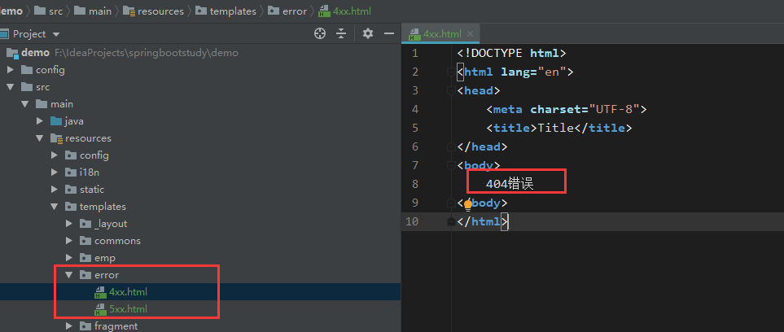
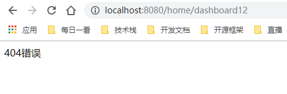
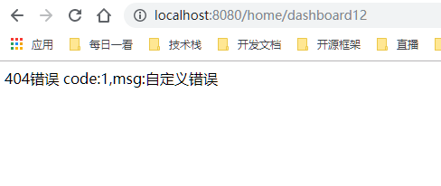
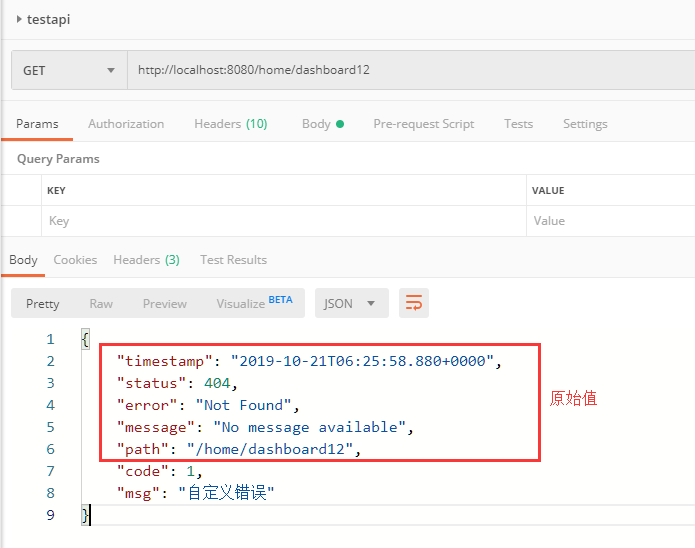

在前边部分我们已经学会了基本的web开发流程，在web开发中，我们通常会对请求做统一处理，比如未登录的用户要拦截掉相关请求，报错页面统一显示等等，这些都需要配置，可以大大简化我们的代码，实现功能的完整性与统一性。
首先我们先做一个登录身份验证拦截器，来拦截那些没有登录的用户，保护我们的资源。下面我们创建一个拦截器，需要实现拦截器接口。
1 package com.example.demo.component;
2
3 import org.springframework.web.servlet.HandlerInterceptor;
4 import org.springframework.web.servlet.ModelAndView;
5
6 import javax.servlet.http.HttpServletRequest;
7 import javax.servlet.http.HttpServletResponse;
8
9 public class LoginHandlerInterceptor implements HandlerInterceptor {
10
11 @Override
12 public boolean preHandle(HttpServletRequest request, HttpServletResponse response, Object handler) throws Exception {
13 if(request.getSession().getAttribute("loginUser") == null){
14 request.setAttribute("msg","请先登录");
15 request.getRequestDispatcher("/index.html").forward(request,response);
16 return false;
17 }
18 return true;
19 }
20
21 @Override
22 public void postHandle(HttpServletRequest request, HttpServletResponse response, Object handler, ModelAndView modelAndView) throws Exception {
23
24 }
25
26 @Override
27 public void afterCompletion(HttpServletRequest request, HttpServletResponse response, Object handler, Exception ex) throws Exception {
28
29 }
30 }这个拦截器的作用是获取当前session中的loginUser属性，如果有值说明登录了就可以放行，当然我们需要在登录成功的代码里边设置好session的这个属性。
在WebConfig中添加我们的拦截器：
1 //所有的WebMvcConfigurerAdapter组件都会一起起作用
2 @Bean //将组件注册在容器
3 public WebMvcConfigurerAdapter webMvcConfigurerAdapter(){
4 WebMvcConfigurerAdapter adapter = new WebMvcConfigurerAdapter() {
5 @Override
6 public void addViewControllers(ViewControllerRegistry registry) {
7 registry.addViewController("/").setViewName("login");
8 registry.addViewController("/index.html").setViewName("login");
9 }
10
11 @Override
12 public void addInterceptors(InterceptorRegistry registry) {
13 registry.addInterceptor(new LoginHandlerInterceptor())
14 .excludePathPatterns("/index.html","/","/user/login");
15 }
16 };
17 return adapter;
18 }第12-15行，注册我们拦截器之后，排除掉不需要验证的页面，默认情况下静态资源不会做验证。
springboot默认已经配置了统一错误处理，只不过错误页面是内置的，可能不是我们想要的，所以如果我们要自定义错误页面，还得重新配置。
在使用模板的情况下，springboot默认会找到/templates/error/xxx.html页面作为错误页面显示，比如我们用4xx.html处理所有httpstatuscode以4开头的错误，比如401，403，404，如果有具体的数字，就先用具体的数字对应页面，如果没有就用有前缀开头的页面。
显示错误页面时，页面上能获取到以下信息，可以让我们看到详细的错误信息：
timestamp：时间戳。
status：状态码。
error：错误提示。
exception：异常对象。
message：异常消息。
errors：JSR303数据校验的错误都在这里。
在没有模板的情况下，会去找静态资源下的相关页面，如果静态资源下也没有，就用springboot默认的错误页面。如下，我添加了一个4xx.html的错误处理页面，当我访问一个不存在的路径（404错误）时，就会显示我添加的4xx.html页面：


默认情况下springboot会出现自适应的错误显示，当用浏览器访问（接受类型为text/html）时会显示错误页面，当用postman(接受类型为application/json）会显示错误json数据。不过显示的字段都是内置固定的，如果我们想要添加自己的错误数据，就要自己定制了。
在springboot中，出现错误以后，会来到/error请求，会被BasicErrorController处理，响应出去可以获取的数据是由getErrorAttributes得到的（是AbstractErrorController（ErrorController）规定的方法），这里我们就可以编写一个ErrorController的实现类【或者是编写AbstractErrorController的子类】，放在容器中替换掉原来的ErrorController，页面上能用的数据，或者是json返回能用的数据都是通过errorAttributes.getErrorAttributes得到。
添加自定一个ErrorAttribute，重写errorAttributes.getErrorAttributes，返回自己的数据map：
1 package com.example.demo.component;
2
3 import org.springframework.boot.web.servlet.error.DefaultErrorAttributes;
4 import org.springframework.stereotype.Component;
5 import org.springframework.web.context.request.WebRequest;
6
7 import java.util.Map;
8
9 @Component
10 public class MyErrorAttributes extends DefaultErrorAttributes {
11 @Override
12 public Map<String, Object> getErrorAttributes(WebRequest webRequest, boolean includeStackTrace) {
13 Map<String, Object> map = super.getErrorAttributes(webRequest, includeStackTrace);
14 map.put("code",1);
15 map.put("msg","自定义错误");
16 return map;
17 }
18 }访问错误页面和json返回：


不得不说，springboot真是很懂我们，把所有东西都配置好了，只要我们稍微修修补补就能很好的满足我们的需求了，这里我们可以完全不要原始的错误信息，可以把错误信息获取数据组装成我们标准统一格式的错误信息，也可以在这里统一记录我们的错误日志，也是非常的方便。